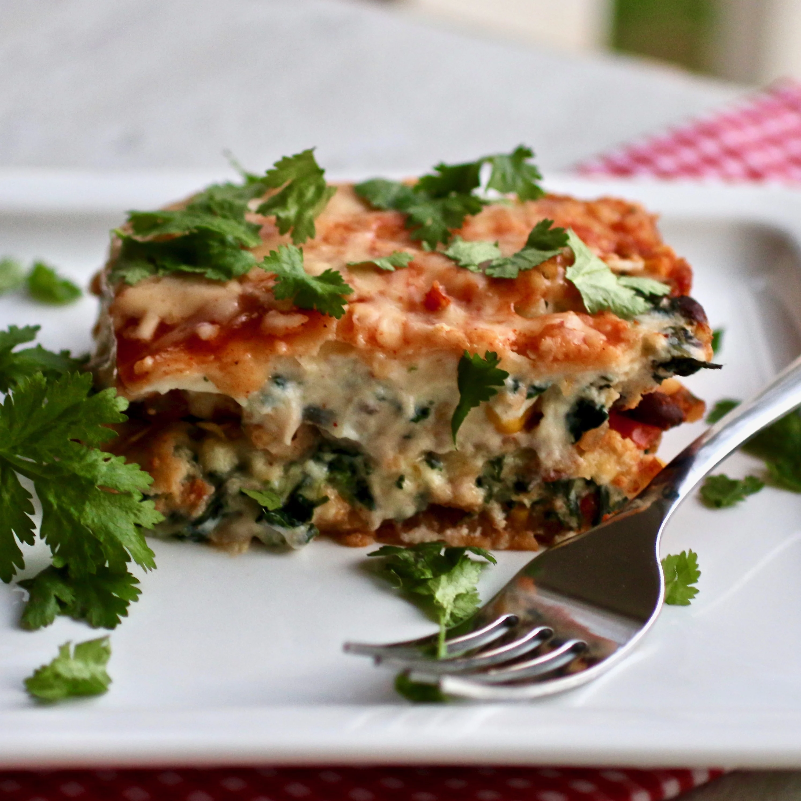

Vegetarian Mexican Lasagna

Description
A vegetarian Tex-Mex lasagna made with corn tortillas and packed
with cheese and veggies. Garnish with cilantro, sour cream, and other favorite toppings.
Ingredients
- cooking spray
- ½ teaspoon olive oil
- 1 tablespoon and 1 teaspoons diced sweet onion
- .17 jalapeno peppers, seeded and diced
- .08 red bell pepper, diced
- ⅓ cloves garlic, minced
- .08 (16 ounce) jar salsa
- .08 (15.5 ounce) can black beans, rinsed and drained
- .08 (15.25 ounce) can whole kernel corn, drained
- ⅚ teaspoon chili powder,
- ⅚ teaspoon ground cumin
- .08 (10 ounce) package frozen chopped spinach, thawed and drained
Steps
- Preheat the oven to 350 degrees F (175 degrees C). Spray a 9x13-inch baking dish with cooking spray.
- Heat olive oil in a large skillet over medium heat. Add onion, jalapenos,
bell pepper, and garlic; cook and stir until onion is translucent, 5 to 7 minutes.
Reduce heat to medium-low and add salsa, black beans, corn, chili powder, and cumin.
Bring to a simmer; let simmer for 5 minutes.
- Combine 2 cups pepper Jack cheese, ricotta cheese, spinach, egg, salt, and pepper in a bowl.
- Place 6 corn tortillas in the bottom of the prepared baking dish. Add 1/2 of the
vegetable mixture using a slotted spoon, followed by 1/2 of the cheese and spinach mixture.
Add a layer of 6 tortillas and follow with remaining vegetables and remaining cheese mixture.
Top with remaining tortillas. Spread enchilada sauce across the top and remaining pepper Jack cheese.
- Bake in the preheated oven until cheese is melted and bubbly, 45 minutes to 1 hour.
Click here to go home